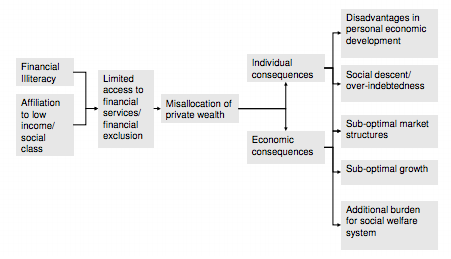

THE COMMITTEE ON CULTURE AND EDUCATION (CULT)
Despite the financial literacy initiatives of the OECD, World Bank, EU and national entities, over-indebtedness and a lack of understanding of basic financial concepts and consumer rights still prevail. How can the financial education of EU citizens’ be improved?
Vice President: Luca Olumets - Estonia
Explanation and relevance of the Topic:Financial education improves individuals’ understanding of financial products and concepts, and empowers them by investing in the development of the necessary skills to improve their financial literacy. Financial literacy emphasises individuals’ awareness of money management, income, savings, financial risks and opportunities. The abovementioned elements of financial literacy are aimed at (1) empowering consumers to make the best decisions given their financial circumstances, (2) protecting individuals’ consumer rights, and (3) being in charge of one’s finances.
The Organisation for Economic Co-operation and Development (OECD) started emphasising the role of financial education in combating low levels of financial literacy in the early 2000s and since then, incremental steps have been taken to improve financial literacy globally. However, the negative effects of limited understanding of financial concepts did not reveal individuals’ weaknesses to financial turbulence until the 2008 financial crisis and the following economic recession which exposed many households to careless financial decision-making, resulting in an accumulation of consumer debt across the EU. Such high levels of consumer debt have raised additional concerns about the possibility of rolling over debt, or accessing new sources of borrowing to cover existing loans. An over-indebted household has insufficient funds to meet its financial commitments; over-indebted households face difficulties in escaping a vicious cycle of accumulating debt to meet their financial commitments. The question of whether extensive or sufficient prior financial knowledge would have prevented many households from ending up in such a state arises.
In order to actively combat lack of financial knowledge, many international organisations, and EU Member States have conducted surveys which have resulted in the undertaking of initiatives and projects aimed at increasing citizens’ understanding of the financial environment and its key concepts. The OECD has developed a survey instrument to address people from different backgrounds and various countries, in which it emphasises three aspects of peoples’ comprehension of financial literacy: financial knowledge, financial behaviour, and attitude, and how they are interlinked.
The European Commission has explained the benefits of financial education for an individual, the society and the economy. On an individual level, financial education may develop young peoples’ skills thus allowing them to lead an independent life, and make better financial decisions in accordance with their needs. Benefits for society include encouraging citizens, even those with low incomes to engage in financial planning and saving; two elements that diminish the potential of financial exclusion. Should individuals become financially literate, they are more likely to save and challenge financial service providers to develop products that correspond to their needs, having a positive effect on the economy on both investment levels and economic growth.
However, the active role of international organisations yields little results as education falls under the exclusive competences of the Member States. Thus international and supranational organisations have limited powers in formulating education policy. Since 2007, limited progress in the provision of financial education and Member States’ inadequate response to decreasing levels of individuals’ financial understanding allowed for a negative spillover effect of the financial crisis on the microeconomic level, as consumers’ financial decisions were not optimal.
Figure 1: Risks deriving from financial illiteracy.
Links:
EBF: Financial literacy – empowering consumers to make the right choices:
http://www.ebf-fbe.eu/wp-content/uploads/2014/03/EBF_Financial_Education_-_rev7-26-9_webversion-2009-00831-01-E1.pdf
Communication from the Commission: Financial Education:
http://www.parliament.bg/pub/ECD/71166COM_2007_808_EN_ACTE_f.pdf
OECD: Financial Education, Savings and Investment:
http://www.oecd-ilibrary.org/docserver/download/5k94gxrw760v.pdf?expires=1402169872&id=id&accname=guest&checksum=549D61E963BA730697350823892773BD
OECD: Measuring Financial Literacy:
http://www.oecd-ilibrary.org/docserver/download/5k9csfs90fr4.pdf?expires=1402169205&id=id&accname=guest&checksum=F263B945BA7D06DB8FC39F84603F690C
Over-indebtedness:
ec.europa.eu/social/BlobServlet?docId=6708&langId=en
Treaty on European Union (TEU) and the Treaty on the Functioning of the European Union (TFEU):
http://www.eudemocrats.org/fileadmin/user_upload/Documents/D-Reader_friendly_latest%20version.pdf
World Bank: Financial literacy around the world:
http://elibrary.worldbank.org/doi/pdf/10.1596/1813-9450-6107
Key terms:· Is financial literacy a determinant of individual financial behaviour?
· Is financial education the antidote to the increasing level of over-indebtedness?
· How relevant is formal or informal education in shaping the understanding of consumer rights and basic financial concepts?
· What should the role of the EU be in integrating financial literacy initiatives into national educational structures?
· Are there considerable differences among Member States’ financial education initiatives?
· Should financial literacy initiatives include sectorial stakeholders (i.e banking institutions, financial organisations etc.) or should those initiatives be carried out solely by Member States?
Key facts and figures:· A survey carried out in Hungary found that consumers were not aware of basic financial terms; 70% of respondents were not aware of the meaning of inflation.
· A UK survey found that at all income levels many people do not plan ahead, and that 70% had no provision to cover an unexpected drop in income
· A UK survey found that 33% of people, who hold no more complex products than general insurance, bought their policy without comparing it to even one other product.
· According to a study of Lietuvos Bankas carried out in 2009, around 30% of disposable income, on average, was used for debt servicing by those households which had outstanding debt.
Links:
Case study on young Hungarians and their level of financial knowledge:
http://ec.europa.eu/internal_market/finservices-retail/docs/capability/conference/otto-gecser_en.pdf
Financial Capability in the UK:
http://www.fsa.gov.uk/pubs/other/fincap_baseline.pdf
Assessment on Financial Literacy:
http://www.moneyms.eu/uploads/1/6/2/1/16214540/moneyms_assessment_on_financial_literacy.pdf
Business Insider: ‘Teach kids financial literacy to spark entrepreneurship’:
http://www.businessinsider.com/r-buffett-teach-kids-financial-literacy-to-spark-entrepreneurship-2014-19
Key conflicts:There are three main conflicts associated with this topic. First, in economies that are recovering from the recent recession, information is power and knowledge is key. Financial knowledge helps people and businesses in making smart and profitable decisions regarding their investments, spending and lending, and helps guarantee that individuals’ consumer rights are fully upheld. However, there seems to be a negative relationship between the growing need for understanding financial concepts, and the actual knowledge thereof. The current financial literacy initiatives in Member States are not sufficient enough and the levels of individual’s financial literacy remain low. Therefore, the conflict between the lack of knowledge and the rising need for understanding financial concepts needs to be corrected for with higher effectiveness.
Second, households with low incomes, young adults, people with lower levels of education, and single parents are more likely to fall into a vicious cycle of over-indebtedness. Financial education has been announced in the European Commission’s report for 21st Century Europe as an essential component of its efforts to ensure that the Single Market can bring direct benefits to Europe’s citizens. Keeping the aforementioned aim as an over-reaching goal, many Member States have taken measures that involve enforcing certain financial courses into a primary and secondary school curricula e.g. money basics. Even though financial education from an early age is likely to yield the anticipated results for the levels of financial literacy, it is questionable whether such education should be compulsory or voluntary.
Third, education falls under the exclusive competences of the Member States where the EU has the power to merely assist. The task of enabling financial understanding through literacy initiatives is mainly up to the Member States. Even though many Member States have taken considerable actions in order to raise the level of financial literacy, a number of Member States have made little progress in initiating measures regarding financial knowledge. If the aim is the same for all Member States, to tackle low levels of financial literacy, then how to do deal with such discrepancies among the Member States as early on as possible?
Links:
European Insurance and Occupational Pensions Authority (EIOPA): Report on Financial Literacy and Education Initiatives by Competent Authorities:
https://eiopa.europa.eu/fileadmin/tx_dam/files/publications/reports/Report_on_Financial_Literacy_and_Education__EIOPA-CCPFI-11-018_.pdf
TIME: ‘Financial Education is All the Rage but Does it Work?’
http://business.time.com/2013/10/25/financial-education-is-all-the-rage-but-does-it-work/
The Wall Street Journal (WSJ): ‘Teaching Financial Literacy, Starting with Teens’:
http://online.wsj.com/news/articles/SB10001424052702304640104579487533888321814
The Economist: ‘Getting it right on the money’:
http://www.economist.com/node/10958702
The Economist: An economist descends into the trenches:
http://www.economist.com/node/12675257
Stakeholders:Citizens , and their capacity to comprehend the complexity of financial concepts, are the target audience of financial literacy initiatives. Member States’ governments have employed different initiatives and strategies to increase citizens’ understanding of financial concepts and elements of sound financial decision-making so as to minimise the potential of social exclusion and risk of poverty resulting from increasing levels of household over-indebtedness. The highly integrated financial environment of the EU and the provision of mobility and market activity within the EU, however, require coordinated action and inclusive strategies aimed at increasing the financial literacy of individuals. Hence, EU institutions and the resulting initiatives at the EU level are vessels of added value in the efforts of bothnational and supranational actors to enhance citizens’ awareness of financial concepts. National organisations that are active in the financial sector may also provide governments with the necessary expertise in formulating and implementing financial literacy initiatives. Such organisations like central banks, financial associations, consumer advocacy organisations and decentralised government agencies are stakeholders that add relevant and appropriate input to initiatives aimed at empowering individuals’ understanding of the complex concepts and structures that govern financial decision-making.
Additionally, international organisations like the OECD and the World Bank should act as channels for international reporting and benchmarking of best practices. This would be in the hope that financial literacy initiatives that have yielded significant results are shared among members of the international community allowing financial regulators, market stakeholders and educational agencies to create inclusive financial literacy initiatives that are relevant, appropriate and have the capacity to develop the financial planning and decision-making skills of citizens.
Links:
The World Bank: Good Practices for Financial Consumer Protection:
http://siteresources.worldbank.org/EXTFINANCIALSECTOR/Resources/Good_Practices_for_Financial_CP.pdf
European Insurance and Occupational Pensions Authority (EIOPA): Report on Financial Literacy and Education Initiatives by Competent Authorities:
https://eiopa.europa.eu/fileadmin/tx_dam/files/publications/reports/Report_on_Financial_Literacy_and_Education__EIOPA-CCPFI-11-018_.pdf
EBF: Initiatives taken by the Member States, p. 13-56:
http://www.ebf-fbe.eu/wp-content/uploads/2014/03/EBF_Financial_Education_-_rev7-26-9_webversion-2009-00831-01-E1.pdf
WSJ: Video about the challenges facing financial literacy:
http://live.wsj.com/video/the-challenges-facing-financial-literacy/C0AEAD7E-2948-4434-AF99-AB2C2192EF52.html#!C0AEAD7E-2948-4434-AF99-AB2C2192EF52
Existing Measures:The importance of good financial education has been acknowledged at both the international and EU levels. In the EU, initiatives such as the White Paper on Financial Services Policy (2005-2010), the May 2007 Green Paper on Retail Financial Services, and the European Parliament resolution on financial services policy, adopted in July 2007, emphasised the EU’s active attitude towards increasing citizens’ understanding of the financial environment.
The European Commission has already taken some initial steps to address financial education. It has set up a website, Dolceta17, offering consumer education to adults. One of the modules on this site is dedicated to financial services, with subjects including budgeting, consumer credit and home loans, means of payment and investments. Another initiative is the ‘Europa Diary’, a booklet distributed to second-level students to inform them of their rights as consumers. It includes a section on money, and gives early warning about the dangers of excessive borrowing.
In 2009, the European Database for Financial Education (EDFE) was launched, which is an ‘electronic library’ of existing financial education schemes. In 2008 the Commission Expert Group on Financial Education was created with an aim to promote the exchange of ideas, experiences and best practices. The Group’s three year mandate came to an end in 2011, noting that the European Commission will focus on consumer protection and continue to monitor the many activities of the OECD.
The OECD and the World Bank have both conducted surveys and published reports in order to best depict the current status of financial knowledge in the world. Their extensive reporting has given rise to many initiatives taken by the EU, but has mostly benefitted the Member States, who have created projects starting from ‘debt-free through life’ in Austria to ‘Portal del Cliente Bancario’ (Financial Watchdog) website in Spain.
Links:
OECD: Current Status of National Strategies for Financial Education:
http://www.oecd-ilibrary.org/docserver/download/5k9bcwct7xmn.pdf?expires=1402169097&id=id&accname=guest&checksum=37FA79C25D86BB817A918341B95239CB
Survey of Financial Literacy Schemes in the EU27; Responses in the Member States p.13-20:
http://ec.europa.eu/internal_market/finservices-retail/docs/capability/report_survey_en.pdf
Consumer Classroom – What is it?
http://www.consumerclassroom.eu/about/teacher-resources
‘Europa Diary’:
http://ec.europa.eu/consumers/europadiary/index_en.htm
EBF: Initiatives taken by the Member States, p. 13-56:
http://www.ebf-fbe.eu/wp-content/uploads/2014/03/EBF_Financial_Education_-_rev7-26-9_webversion-2009-00831-01-E1.pdf